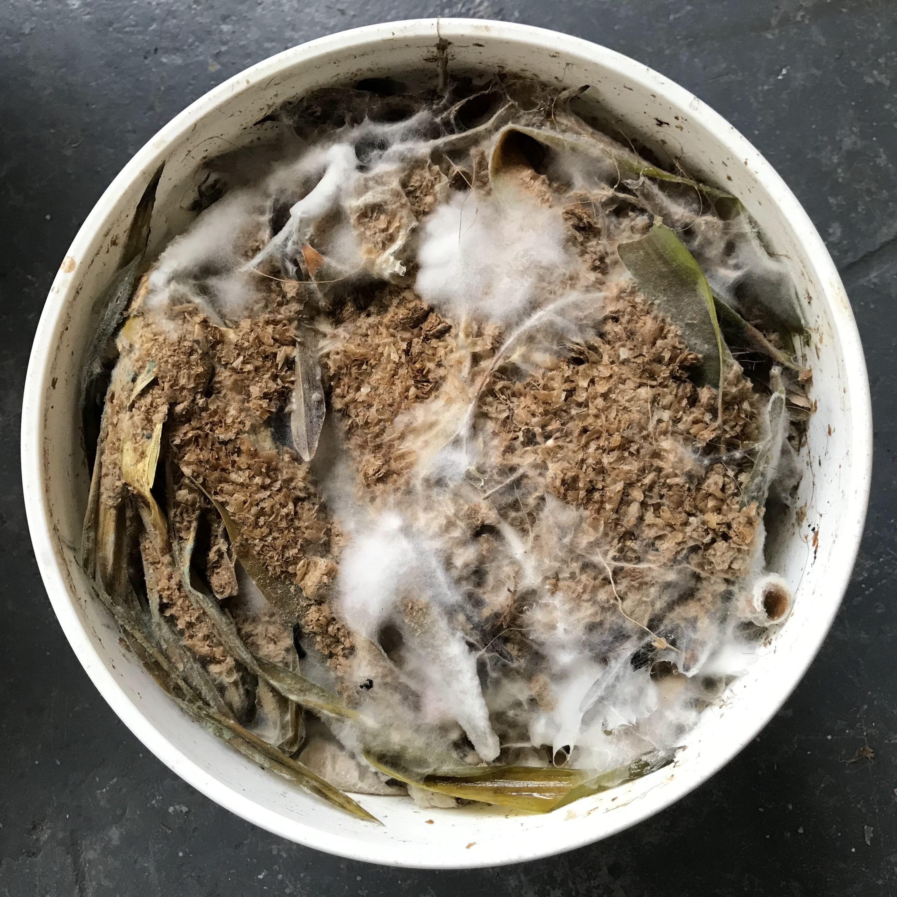

What is Bokashi?
Bokashi is a method of organic waste fermentation that returns virtually all of the carbon back to the soil. The fermentation takes place in a sealed anaerobic environment and with the help of specialist microbes does not produce C02 or methane.
How to compost with Bokashi
- Put a handful of bokashi chaff in the bottom of the bucket.
- Add kitchen scraps to the bucket, adding a handful of chaff for every few inches of depth. One lb. of chaff should be enough for one bucket.
- Use the plunger to press the food scraps down and keep out as much air as possible.
- When the bucket is full, seal it with a lid and let it ferment for two weeks.
- After 2 weeks you can add it to regular compost or just put it directly in the ground.
Can I ferment that?
YES
- Almost all kitchen scraps
- Fruit and vegetables
- Raw or cooked food
- Grains and bread
- Meat, fish, dairy, eggs
- Small bones
- Tea bags and coffee grounds
- Tissues
- Slightly moldy food
NO
- Large quantities of liquids or oils
- Thick bones and oyster shells
- Very moldy food
- Paper